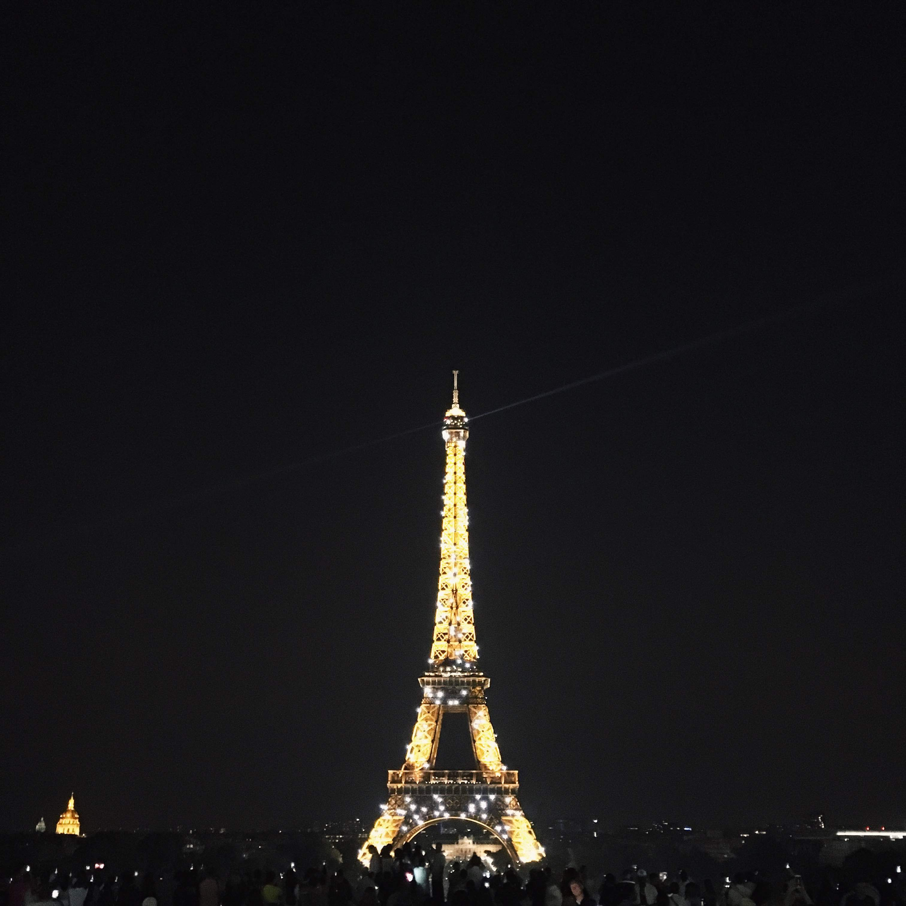
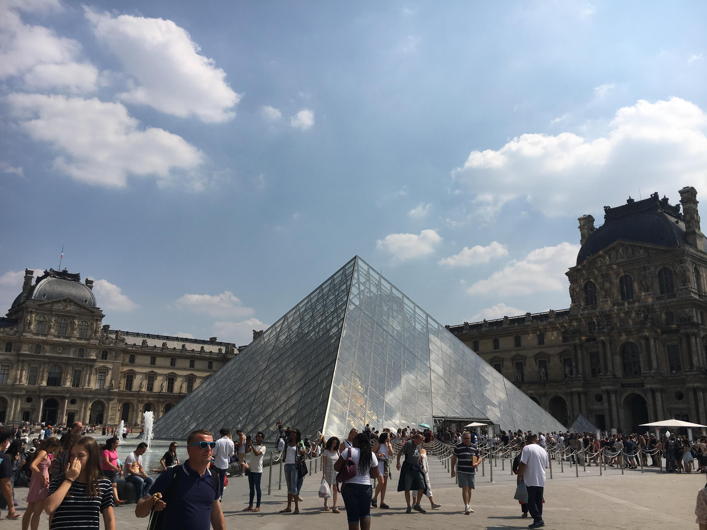
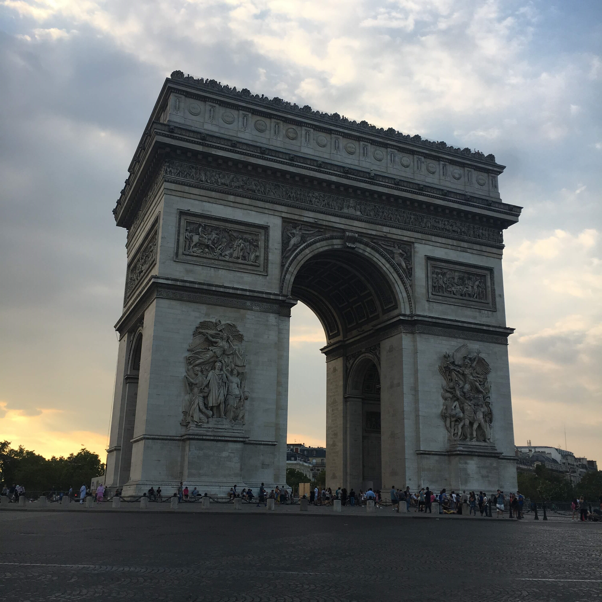
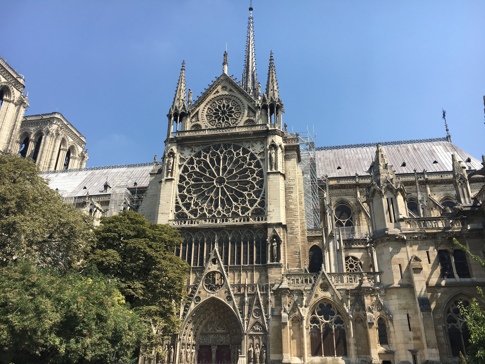
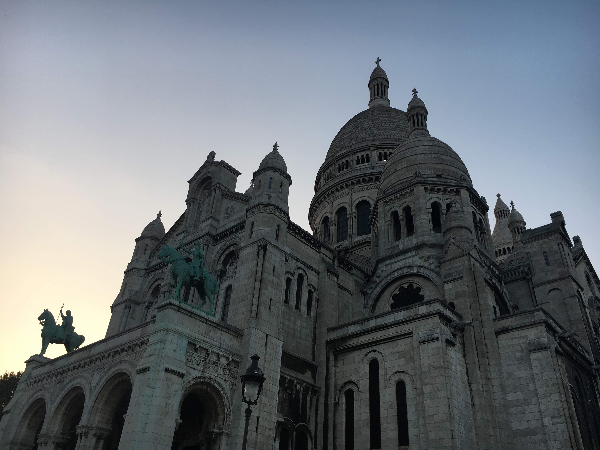
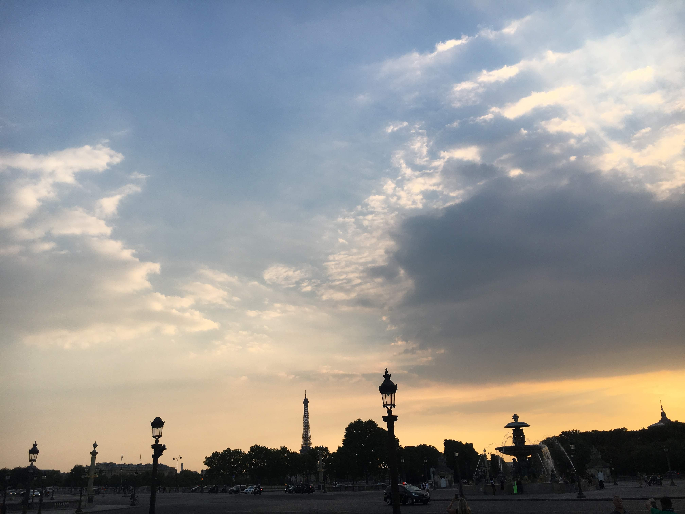
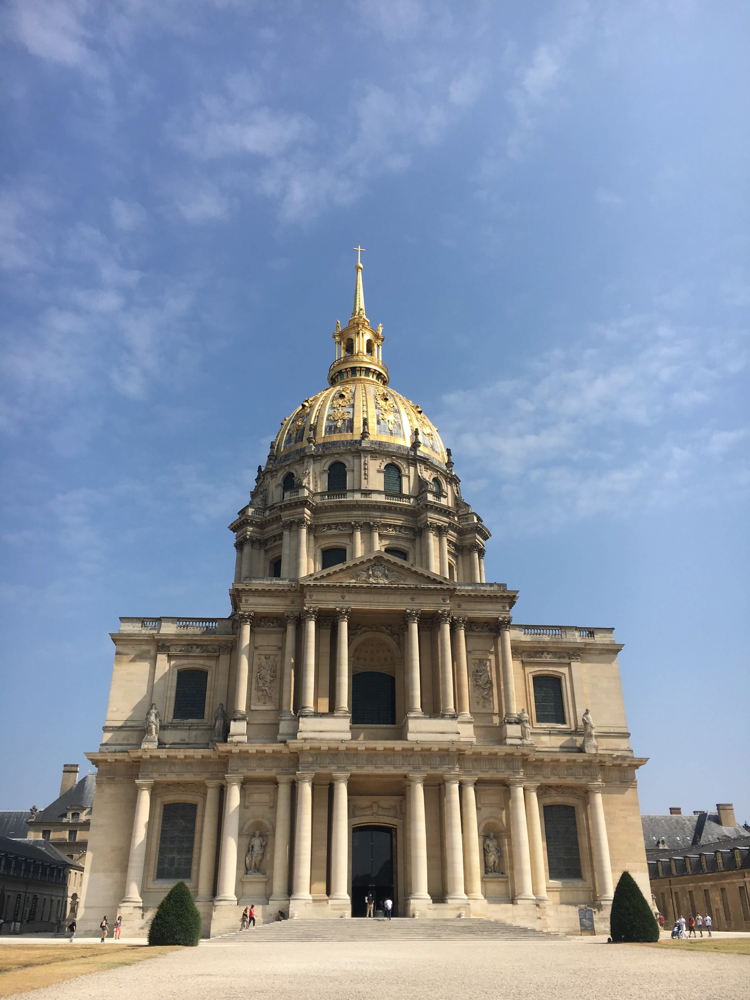
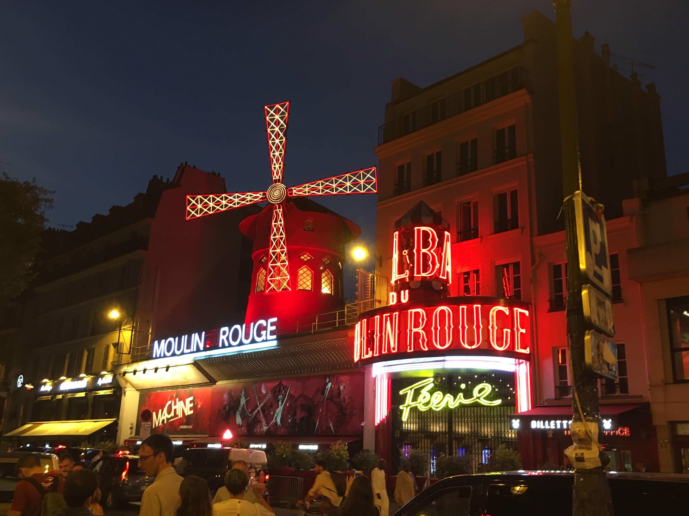

These places are worth to visit:
-
Eiffel Tower

Towering more than 1,000 feet (300 meters) high in the Champ de Mars park, this iron structure was constructed for the 1889 World Exposition.
Visitors can ride the elevator to see incredible views of the city or dine in one of the two fine restaurants that are situated within the tower.
-
Louvre

The Louvre Museum is located in the Louvre Palace with its signature glass pyramid marking its entrance.
Housing a collection of more than 1 million objects, the Louvre boasts some of the world’s most famous art works such as Leonardo da Vinci’s “Mona Lisa”,
Michelangelo’s “Dying Slave” and the Greek statue, “Venus of Milo.”
-
Arc de Triomphe

Arc de Triomphe was constructed in 1806 to memorialize the triumphal battles of Napoleon Bonaparte. Standing 164 feet high and 148 feet (50 by 45 meters) wide,
the arch features intricate reliefs depicting victorious battles and engraved names of many who died fighting for the emperor.
Beneath the arch is the Tomb of the Unknown Soldier from the first world war.
-
Notre Dame de Paris

Standing more than 400 feet (120 meters) high with two lofty towers and a spire, this marvelous church is considered a supreme example of French Gothic architecture.
A tour of this 13th century masterpiece allows visitors to admire the awe-inspiring rose windows, Gothic carvings, beautiful sculptures and a collection of relics.
-
Sacre-Coeur

One of the most noticeable landmarks in Paris is the striking white-domed basilica of the Sacre-Coeur. Situated at the city’s highest point on Montmartre hill,
this stunning basilica draws many tourists every year to see its marble architecture and gorgeous interior.
-
Palace de la Concorde

At the east end of the Champs-Elysées is Place de la Code, the largest square in Paris with fantastic vistas in every direction.
It was in this square that the French King Louis XVI, Marie Antoinette and many others were guillotined during the French revolution.
The large 3200 years old Egyptian obelisk in the center of the Place de la Concorde was brought from the Temple of Luxor in the 19th century.
-
Les Invalides

Les Invalides is a complex of buildings that honors the French military. It was built in 1670 as a hospital and retirement home for vets.
It still serves that function today as well as many more.
Les Invalides is home to military museums and a church that is the burial site of its war heroes, including Napoleon Bonaparte.
-
Pantheon
The Pantheon is where famous French citizens are buried. Modeled after the Pantheon in Rome, it was originally a church dedicated to St. Genevieve,
the patron saint of Paris, and her relics. The church was rebuilt in the neoclassical style by King Louis XV to thank God for his recovery from serious illness.
-
Moulin Rouge

It catered to the rich who wanted to “slum” it. Courtesans worked there and were responsible for inventing the can-can, a dance considered racy for the era.
The Moulin Rouge is still considered Paris’s premier entertainment venue and has been the subject of numerous films.
2018. KPI. FICT. IS-71. Rudenko